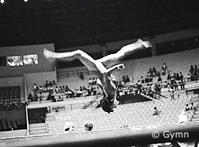

Eva Mareckova (CSSR)
4-Time CSSR AA Champion

|
|
Eva performs a front
aerial during podium training at the 1978 World Cup in Brazil. |
Eva was born on May 18, 1964 in
Detva (Slovakia). She trained at KSG Detva, and was coached by Jan Zifcak
and Hana Zifcakova. In 1977 at age 13, she became the youngest person ever
to win the CSSR Championships.
Competition Results
- 1975
Central Slovak Region Championships: 1st AA (advanced girls)
- 1976
Jr. CSSR Championships: 1st AA
- Jr. GDR-CSSR Dual Meet: 1st AA
-
- 1977
- CSSR Championships: 1st AA, 1st V, 1st B, 2nd UB, 2nd FX
- CSSR-POL Dual Meet: 1st Team, 2nd AA
CSSR-USSR Dual Meet: 2nd Team, 6th AA
Dynamo Spartakiade: 1st Team, 1st AA, 2nd V, 2nd UB, 3rd FX
Jr. CSSR-HUN Dual Meet: 1st Team, 2nd AA, 1st UB, 3rd FX
Jr. Friendship Tournament (Druzhba): 2nd Team, 4th V, 4th FX, 5th UB
Intl. Junior Championships (Tokyo): 1st V, 2nd FX
Intl. Junior Championships (Osaka): 5th AA, 1st V, 1st UB
- Moscow News: 34th AA
- Riga International: 11th AA, 3rd B
RSFSR-CSSR Dual Meet: 2nd Team, 4th AA, 2nd V, 4th B, 4th FX
Slovak Championships for Children and Youth: 1st AA (youth)
-
- 1978
- American Cup: 3rd AA
- CSSR Championships: 1st AA
- CSSR-ROM Dual Meet: 1st Team, 1st AA
CSSR World Trials: 1st AA
- Jr. European Championships: 7th AA, 7th UB, 7th FX
- World Championships: 6th Team, 16th AA
- World Cup: 9th AA, 5th B, 7th FX
-
- 1979
- Coca-Cola International: 2nd AA, 1st V, 3rd UB, 3rd FX,
6th B
- European Championships: 6th AA, 5th UB, 7th B
- GBR-CSSR Dual Meet: 1st Team, 1st AA
- Pre-Olympics: 4th AA, 2nd V, 3rd UB, 4th B, 6th FX
- Trnava International: 1st AA
- World Championships: 5th Team, 10th AA, 4th B
- World Cup: 7th AA, 5th FX, 7th V, 8th UB
-
- 1980
- CSSR Championships: 1st AA
- Olympic Games: 4th Team, 12th AA
- World Cup: 8th AA, 7th V, 7th FX
-
- 1981
- Chunichi Cup: 4th AA, 3rd B, 3rd FX
- CSSR-HOL Dual Meet: 1st Team, 2nd AA
- CSSR Championships: 1st AA
- Ennia Gold Cup: 2nd AA, 1st V, 1st FX, 6th UB
- European Championships: 16th AA, 6th V
- Kosice International: 4th AA, 1st B, 4th V
Ostrava International: 1st B, 2nd FX
- World Championships: 5th Team, 9th AA, 8th V
-
- 1982
- Rome Grand Prix: 1st AA
-
- 1983
- CSSR Championships: 3rd AA
- University Games: 11th AA
This page was last updated on August 02, 2004 and was last updated on June 27, 2026.
© Gymn Forum